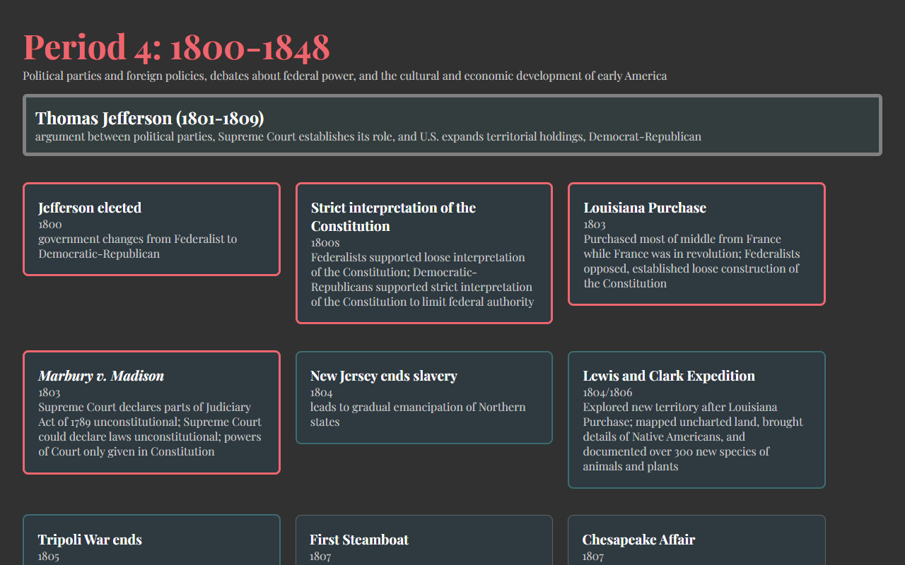

A timeline I built to help remember key events, presidents, and information in preperation for the AP U.S. History exam.
The page is built from a JSON file of more than 650 events and 45 presidents across all nine periods of AP U.S. History.
